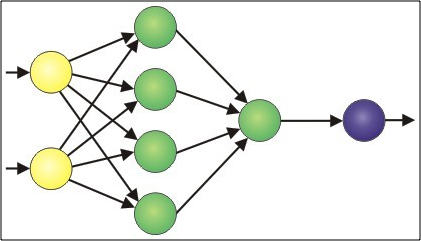

Hi there! I'm Sush, and I'm a developer based in New York. I'm passionate about building products users love and writing clean, concise code.
My Work
My past work has ranged from building games to an SMS-based personal assistant. I am primarily a Ruby on Rails developer, but I also have experience with Swift/iOS and MATLAB.
Carla is a text-message based personal assistant. With a single text, you can set a reminder for yourself or a friend, start a daily journal, and do more. Featured on Product Hunt in May 2015.
MissqlCommand is a Codecademy-like game for learning SQL. Over the course of 10 levels, you'll save the world from nuclear annihilation using SQL queries.
Looseleaf is a D3.js-powered collaborative way to visualize stories. Looseleaf began with a question: what would a story look like if you wrote it with hundreds of collaborators? Start a story, share it with your friends, and visualize the results.

During my studies at the University of Pennsylvania, I worked as a research assistant in the Penn Neurophysics Lab, and developed a technique using Artificial Neural Network's to successfully distinguish and classify by cell type neural spikes from the retina. You can view my paper here.